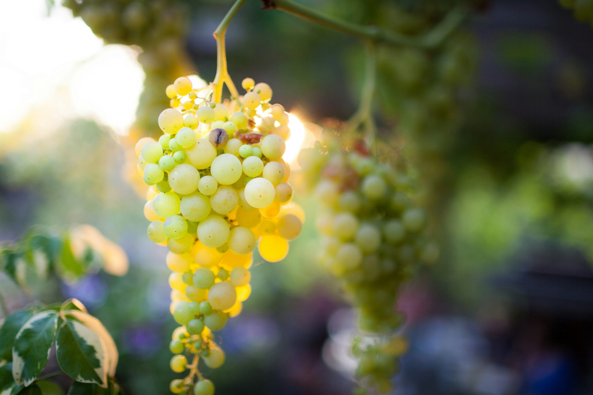

Vigneto e difesa fitosanitaria
Pubblicato il 31 agosto 2026
Registro fitosanitario digitale: obbligatorio dal 1° gennaio 2027
Il registro cartaceo è ora nella sua ultima campagna: dal 2027 ogni elaborazione dovrà essere registrata in un formato digitale leggibile da macchina. Chi è interessato, quali formati, quale programma di transizione.
Leggi l'articolo →